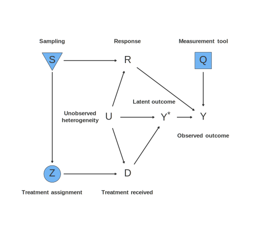
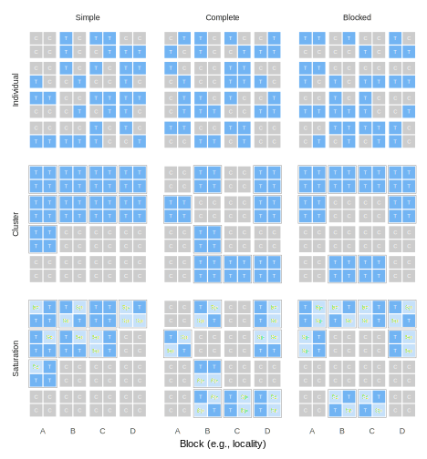
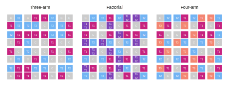
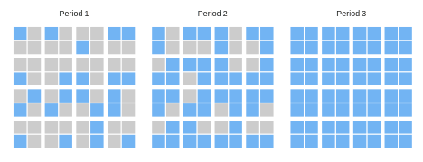
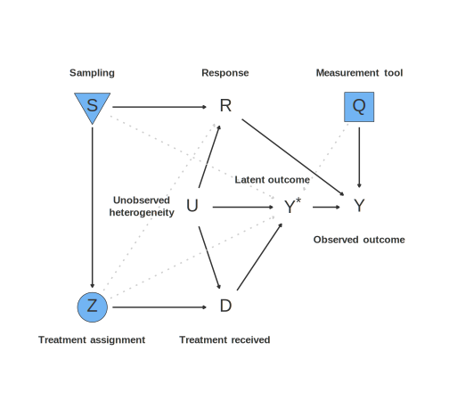

8 Crafting a data strategy
In order to collect information about the world, researchers must deploy a data strategy. Depending on the design, the data strategy could include decisions about any or all of the following: sampling, treatment assignment, and measurement. Sampling is the procedure for selecting which units will be measured; treatment assignment is the procedure for allocating treatments to sampled units; and measurement is the procedure for turning information about the sampled units into data. These three procedures parallel the three elements of an inquiry: the units, treatment conditions, and outcomes.
We think about data strategies in response to Principle 3.1: Design holistically – we make data strategy choices to respond to model features.
Sampling choices are used to justify generalization inferences: we want to make general claims, which often implies inferences about units not sampled. For this reason, we need to pay special attention to the procedure by which units are selected into the sample. We might use a random sampling procedure in order to generate a design-based justification for generalizing from samples to populations. Nonrandom sampling procedures are also possible: convenience sampling, respondent-driven sampling, and snowball sampling are examples of data strategies that do not include an explicitly randomized component.
Assignment choices are used to justify causal inferences: we want to make inferences about the conditions to which units were not assigned. For this reason, experimental design is focused on the assignment of treatments. Should the treatment be randomized? How many treatment conditions should there be? Should we use a simple coin flip to decide who receives treatment, or should we use a more complicated strategy like blocking?
Measurement choices are used to justify descriptive inferences: we want to make inferences about latent values not observed on the basis of measured values. The tools we use to measure are a critical part of the data strategy. For many social scientific studies, a prominent way we collect information is through surveys. A huge methodological literature on survey administration has been developed to help guide questionnaire development. Bad survey questions yield distorted or noisy responses due to large measurement error. A biased question systematically misses the true latent target it is designed to measure, in which case we say the question has low “validity.” A question is high variance if (hypothetically) we would obtain different answers each time we ask, in which case we say the question has low “reliability.” The concerns about validity and reliability do not disappear once we move out of the survey environment. For example, the information that shows up in an administrative database is itself the result of many human decisions, each of which has the possibility of increasing or decreasing the distance between the measurement and the latent measurement target.
Strong research design can help address these three inferential challenges, but we can never be sure that our sample generalizes, or that we know what would have happened in a counterfactual state of the world, or what the true latent value of the outcome is (or if it even exists). Researchers have to choose good sampling, treatment assignment, and measurement techniques that, when combined and applied to the world, will produce analysis-ready information.
More formally, the data strategy, D, is a set of procedures that result in a dataset \(d^*\). It is important to keep these two concepts straight. If you apply data strategy D to the world \(m^*\), it produces a dataset \(d^*\). Similarly, application of D to model m produces d. We say \(d^*\) is “the” result of D, since when we apply the data strategy to the world, we only do so once and we obtain the data we obtain. But when we are crafting a data strategy, we have to think about the many datasets that the data strategy could have produced under all the models in M, since we don’t know \(m^*\). Some of the datasets might be really excellent (from the researcher’s perspective). For example, in good datasets, we achieve good covariate balance across the treatment and control groups. Or we might draw a sample whose distribution of observable characteristics looks really similar to the population. But some of the datasets might be worse: because of the vagaries of randomization, the particular realizations of the random assignment or random sampling might be more or less balanced. We do not have to settle for data strategies that might produce weak datasets – we are in control of the procedures we choose. We want to choose a data strategy D that is likely to result in a high-quality dataset \(d^*\).
In Figure 8.1, we illustrate these three elements of data strategies: sampling (\(S\)), treatment assignment (\(Z\)), and measurement (\(Q\)). These nodes are highlighted by blue boxes to emphasize that they are in the control of the researcher. No arrows go into the \(S\), \(Z\), or \(Q\) nodes; they are set by the researcher. In each case, the strategy selected by the researcher affects a corresponding endogenous variable. The sampling procedure causes changes in the endogenous response (\(R\)), which represents whether participants provide outcome data, for example responding to survey questions. \(R\) is not under the full control the researchers: it is affected by \(S\), the sampling procedure, but also by the idiosyncratic choices of participants who have higher and lower interest and ability to respond and participate in the study (\(U\)). Similarly, the endogenous variable treatment \(D\) represents whether participants actually receive the treatment, regardless of their assignment \(Z\). \(D\) is affected by the treatment assignment procedure (\(Z\)) of course. But except in cases when \(Z\) fully determines \(D\) (no noncompliance), we are concerned that it will be affected by unobserved idiosyncratic features of individuals \(U\). The third researcher node is \(Q\), the measurement procedure. \(Q\) affects \(Y\), the observed outcome, measured by the researcher. \(Y\) is also affected by a latent variable \(Y^*\), which cannot be directly observed. The measurement procedure provides an imperfect measurement of that latent variable, which is (potentially) affected by treatment \(D\) and unobserved heterogeneity \(U\). In the robustness section at the end of the chapter, we explore further variations of this DAG that incorporate threats to inference from noncompliance, attrition, excludability violations, and interference.

8.1 Elements of data strategies
In Chapter 7, an inquiry \(I\) was characterized by a set of outcomes, a set of treatment conditions, and a set of units, as well as a function that summarizes those outcomes, assessed at those conditions, over those units. The three elements of the data strategy \(D\) parallel the first three elements of inquiries: we sample units, assign treatment conditions, and measure outcomes. We next describe menus of approaches that you might use for each of these three parts of your data strategy.
8.1.1 Sampling
Sampling is the process by which units are selected from the population to be studied. The starting point for every sampling strategy should be to consider the units defined in the inquiry. In some cases, all the units to whom the inquiry apply are included in the study, but in others, we consider only a subset.
Why would we ever be content to study a sample and not the full population? For infinite populations, we have no choice. For finite populations the first and best explanation is cost: it’s expensive and time-consuming to conduct a full census of the population. Even well-funded research projects face this problem, since money and effort spent answering one question could also be spent answering a second question. A second reason to sample is the diminishing marginal returns of additional data collection. Increasing the number of sampled units from 1,000 to 2,000 will greatly increase the precision of our estimates. Moving from 100,000 to 101,000 will improve things too, but the scale of the improvement is much smaller. Finally, it may simply not be possible to sample some units. Units in the distant past or distant future, for example, are not available to be sampled, even if they are in the set of units that define the inquiry.
Some sampling procedures involve randomization while others do not. Whether a sampling procedure is randomized or not has large implications for the answer strategy. Randomized designs support “design-based inference,” which refers to the idea that we rely on known features of the sampling process when producing population-level estimates – much more about this in the next chapter on answer strategies. When randomization breaks down (e.g., if the design encounters attrition) or if nonrandomized designs are used, then we have to fall back on model-based inference to generalize from the sample to the population. Model-based inference relies on researcher beliefs about the nature of the uncontrolled sampling process in order to make inferences about the population. When possible, design-based inference has the advantage of letting us ground inferences in known rather than assumed features of the world. That said, when randomly sampled individuals fail to respond or when we seek to make inferences about new populations, we oftentimes fall back to model-based inference.
8.1.1.1 Randomized sampling designs
Owing to the natural appeal of design-based inference, we start off with randomized designs before proceeding to nonrandomized designs. Randomized sampling designs typically begin with a list of all units in a population, then choose a subset to sample using a random process. These random processes can be simple (every unit has an equal probability of inclusion) or complex (first we select regions at random, then villages at random within selected regions, then households within selected villages, then individuals within selected households).
Table 8.1 collects all of these kinds of random sampling together and offers examples of functions in the randomizr package you can use to conduct them. The most basic form is simple random sampling. Under simple random sampling, all units in the population have the same probability \(p\) of being included in the sample. It is sometimes called coin flip random sampling because it is as though for each unit, we flip a weighted coin that has probability \(p\) of landing heads up. While quite straightforward, a drawback of simple random sampling is that we can’t be sure of the number of sampled units in advance. Although, in expectation, we’ll sample \(N*p\) units, in practice, sometimes slightly more units will be sampled and sometimes fewer.
| Design | Description and randomizr R code |
|---|---|
| Simple random sampling |
“Coin flip” or Bernoulli random sampling. All units have the same inclusion probability p |
| Complete random sampling |
Exactly n of N units are sampled, and all units have the same inclusion probability n/N |
| Stratified random sampling |
Complete random sampling within pre-defined strata. Units within the same strata have the same inclusion probability n_s / N_s |
| Cluster random sampling |
Whole groups of units are brought into the sample together. |
| Stratified cluster sampling |
Cluster random sampling within strata |
| Multi-stage random sampling |
First clusters, then units within clusters |
Complete random sampling addresses this problem. Under complete random sampling, exactly \(n\) of \(N\) units are sampled. Each unit still has an inclusion probability of \(p = n/N\), but in contrast to simple random sampling, we are guaranteed that the final sample will be of size \(n\).1 Complete random sampling represents an improvement over simple random sampling because it rules out samples in which more or fewer than \(N*p\) units are sampled. One circumstance in which we might nevertheless go with simple random sampling is when the size of the population is not known in advance, and sampling choices may have to be made “on the fly.”
Complete random sampling solves the problem of fixing the total number of sampled units, but it doesn’t address the problem that the total number of units with particular characteristics will not be fixed. Imagine a population with \(N_{y}\) young people and \(N_{o}\) old people. If we sample exactly \(n\) from the population \(N_{y} + N_{o}\), the number of sampled young people (\(n_y\)) and sampled old people (\(n_{o}\)) will bounce around from sample to sample. We can solve this problem by conducting complete random sampling within each group of units. This procedure goes by the name stratified random sampling, since the sampling is conducted separately within the strata of units.2 In our example, our strata were formed by a dichotomous grouping of people into “young” and “old” categories, but in general, the sampling strata can be defined by any information we have about units before they are sampled. Stratification offers at least three major benefits. First, we defend against sampling surprisingly too few units in some stratum by “bad luck.” Second, stratification tends to produce lower variance estimates of many estimands. Finally, stratification allows researchers to “oversample” subgroups of particular interest (see Section 18.4).
Stratified sampling should not be confused with cluster sampling. Stratified sampling means that a fixed number of units from a particular group are drawn into the sample. Cluster sampling means that units from a particular group are brought into the sample together. For example, if we cluster sample households, we interview all individuals living in a sampled household. Clustering introduces dependence in the sampling procedure – if one member of the household is sampled, the other members are also always sampled. Relative to a complete random sample of the same size, cluster samples tend to produce higher variance estimates. Just as with individual sampling designs, cluster sampling comes in simple, complete, and stratified varieties with parallel logics and motivations.
Lastly, we turn to multi-stage random sampling, in which we conduct random sampling at multiple levels of a hierarchically structured population. For example, we might first sample regions, then villages within regions, then households within villages, then individuals within households. Each of those sampling steps might be stratified or clustered depending on the researcher’s goals. The purpose of a multi-stage approach is typically to balance the logistical difficulties of visiting many geographic areas with the relative ease of collecting additional data once there.
Figure 8.2 gives a graphical interpretation of each of these kinds of random sampling. Here, we imagine a population of 64 units with two levels of hierarchy. For concreteness, we can imagine that the units are individuals nested within 16 households of four people each and the 16 households are nested within four villages of four households each. Starting at the top left, we have simple random sampling at the individual level. The inclusion probability was set to 0.5, so on average, we ought to sample 32 people, but in this particular draw, we actually sampled only 29. Complete random sampling (top center), fixes this problem, so exactly 32 people are sampled – but these 32 are unevenly spread across the four villages. This is addressed with stratified sampling. In the top right, we sample exactly eight people at random from each village of 16 total people.
Moving down to the middle row of the figure, we have three approaches to cluster random sampling. Under simple random sampling at the cluster level, each cluster has the same probability \(p\) of inclusion in the sample, so on average we will sample eight clusters. This time, we only sampled seven. This problem can again be fixed with complete random sampling (center facet), but again we have an uneven distribution across villages. Stratified cluster sampling ensures that exactly two households from each village are sampled.
The bottom row of the figure illustrates some approaches to multistage sampling. In the bottom left panel, we conduct a simple random sample of individuals in each sampled cluster. In the bottom center, we draw a complete random sample of individuals in each sampled household. And in the bottom right, we stratify on an individual-level characteristic – we always draw one individual from each row of the household (substantively, we could imagine that “row” could refer to the age of the household members). This doubly stratified multistage random sampling procedure ensures that we sample two households from each village, and within those households, one older member and one younger member.

8.1.1.2 Nonrandomized sampling designs
Because nonrandomized sampling procedures are defined by what they don’t do – they don’t use randomization – the term encompasses a hugely varied set of procedures. We’ll consider just a few common ones, since the idiosyncrasies of each nonrandomized approach are hard to systematize.
Convenience sampling refers to the practice of gathering units from the population in an inexpensive way. Convenience sampling might be a good choice when generalizing to an explicit population is not a main goal of the design – for example, when a sample average treatment effect is a theoretically important inquiry. For many decades, social science undergraduates were the most abundant data source available to academics and many important theoretical claims have been established on the basis of experiments conducted with such samples. In recent years, however, online convenience samples like Mechanical Turk, Prolific, or Lucid have mostly supplanted undergraduates as the convenience sample of choice in some disciplines. Convenience sampling may lead to badly biased estimates of population quantities. For example, cable news shows often conduct viewer polls that should not be taken at all seriously. While such polls might promote viewer loyalty (and so might be worth doing from the cable executives’ perspective), they do not provide credible evidence about what the population at large thinks or believes.
Many types of qualitative and quantitative research involve convenience sampling. Archival research often involves the “convenience” sample of documents on a certain topic that exist in an archive. The question of how these documents differ from those that would be in a different archive, or how the documents available in archives differ from those that do not ever make it into the archive, importantly shapes what we can learn from them. With the decline of telephone survey response rates, researchers can no longer rely on random digit dialing to obtain a representative sample of people in many countries, and instead must rely on convenience samples from the internet or panels who agree to have their phone numbers in a list. Reweighting techniques in the answer strategy can, in some cases, help recover estimates for the population as a whole if a credible model of the unknown sampling process can be agreed upon.
Next, we consider purposive sampling. Purposive is a catch-all term for rule-based sampling strategies that do not involve random draws, but also are not purely based on convenience and cost. A common example is quota sampling. Sampling purely based on convenience often means we will end up with many units of one type but very few of another type. Quota sampling addresses the problem by continuing to search for subjects until target counts (quotas) of each kind of subject are found. Loosely speaking, quota sampling is to convenience sampling what stratified random sampling is to complete random sampling: it fixes the problem that not enough (or too many) subjects of particular types are sampled by employing specific quotas. Importantly, however, we have no guarantee that the sampled units within a type are representative of that type overall. Quota samples remain within-stratum convenience samples.
A second common form of purposive sampling is respondent-driven sampling (RDS), which is used to sample from hard-to-reach populations such as HIV-positive needle users. RDS methods often begin with a convenience sample and then systematically obtain contacts for other units who share the same characteristic in order the build a large sample. The hope is that as you move out from the initial sample the new subjects become increasingly representative of the population of interest.
Each of these three nonrandom sampling procedures – convenience, quota, and respondent-driven – is illustrated in Figure 8.3. Imagining that village A is easier to reach, we could obtain a convenience sample by contacting everyone we can reach in village A before moving on to village B. This process doesn’t yield good coverage across villages. For that, we can turn to quota sampling scheme in which we talk to the five people who are easiest to reach in each of the four villages. Finally, if we conduct a respondent-driven sample, we select a seed that person recruits their four closest friends (who may or may not reside in the same village), who in turn recruit from their friends, and so on.

8.1.1.3 Sampling designs for qualitative research
Another term for sampling is case selection. In case study research, whether qualitative or quantitative, the way we select the (typically small) set of cases is of great importance, and considerable attention has been paid to developing case selection methods.
Advice for selecting cases ranges widely, with many seeming disagreements across scholars (see, for instance, the symposium in Collier et al. (2008)). We describe the major strategies used below and highlight some of the goals and assumptions motivating them. The most general advice, however, is that there are likely situations and rationales that could justify any of these strategies. But whether one or the other strategy is right for the problem you face most likely depends on the three other components of your design: what your model set is, what your inquiry is, and what your answer strategy is. Conversely, it is very difficult to assess whether one approach is more appropriate than another without knowing about these other parts of a design because it is hard to tell whether a case will be useful without knowing what you plan to do with it. In short, the case selection decision is one that is usefully made, and justified, by diagnosis.
Geddes (2003) warned that “the cases you choose affect the answers you get.” This warning emphasizes the importance of case selection. If we select cases in order to arrive at a particular answer, then the research design doesn’t provide good evidence in favor of the answer.
Non-purposive selection. Fearon and Laitin (2008) argue that one good approach is to select randomly. The argument for this approach depends on the purpose and details of the design. If the goal is to use case studies to check the quality of data used in large \(n\) analysis, or to explore the sets of pathways that might link a cause to an outcome, then random selection has the virtue of generating a representative set of cases and guards against cherry-picking.
Positive selection. Goertz (2008) argues that one should select multiple cases for which a positive outcome (e.g., a revolution) is unambiguously observed and one should also seek diversity in possible causes. The goal is to have as many opportunities as possible to observe possibly distinct paths leading to an outcome. We have a different perspective on the positive selection procedure, for two reasons. First, the approach presupposes an ability to figure out the causal factors within a case, i.e., it presupposes that one can assess the counterfactual values of outcomes within a case. Second, even if one can do single-case causal inference, Goertz argues that cases in which \(X=0\) and \(Y=0\) are not very useful for figuring out if \(X=1\) causes \(Y=1\). On the contrary, we might believe that the effect of \(X\) on \(Y\) runs through a positive effect of \(X\) on \(M\) and a positive effect of \(M\) on \(Y\). But if looking at an \(X=0, Y=0\) case we find that, awkwardly, \(M=1\), the evidence casts doubt on the causal importance of \(X\) in the \(X=Y=1\) cases. Ultimately, whether the positive selection approach is appropriate in any given instance is a question for diagnosis insofar as it depends on the model, the inquiry, and the answer strategy.
Other purposive strategies. Lieberman (2005) proposes using the predicted values from an initial cross-case regression model in order to select cases for in-depth analysis. Exactly how to select, however, depends on the inquiry and answer strategy. When the inquiry is focused on uncovering the same causal relationship sought in the regression analysis, Lieberman (2005) suggests selecting cases that are relatively well predicted and that maximize variation on the causal variable. He points to Martin (1992) and Swank (2002) as examples of designs employing this strategy. However, Lieberman (2005) advocates a different case selection strategy when the goal is to expand upon the theory initially tested in the regression analysis. In that instance, he recommends choosing cases lying far from the regression line, which are not well predicted and may therefore lead to insights about what alternative considerations were left out of the initial regression.
Seawright and Gerring (2008) use the regression line analogy to describe seven different sampling strategies tailored to suit different inquiries.3 These include “typical cases” that are representative of the cross-case relationship and can be chosen in order to explore and validate mediating mechanisms. If the researcher’s model implies union membership increases welfare spending in democracies through its effects on negotiations with the government, for example, then the researcher might look for evidence of such processes in the cases well predicted by the theory. Diverse cases maximize variation on both \(X\) and \(Y\), while extreme cases are located at a maximal distance from other cases on just one dimension—in our example, the researcher chooses the two cases with the highest degree of union strength. While diverse and extreme cases might lie on the regression line, deviant cases are defined by their distance from it. Such cases call for new explanations to account for outcomes. Influential cases are those whose exclusion would most noticeably change the imaginary regression line (i.e., those with the highest leverage in a regression).
Mills methods. Two more approaches correspond to “methods of difference” and “methods of similarity” (Mill 1869). The method of difference approach selects a set of cases that are similar in a set of pretreatment variables, but nevertheless differ in \(Y\). This gives an opportunity to search for a cause other than those held constant that could explain the variation. The method of similarity approach selects a set of cases that have similar outcomes and discounts causes that vary across these cases and focuses on potential causes that do not. If one characteristic covaries with the outcome, it becomes a candidate for the cause. For example, Skocpol (1979) compares historical periods in France, Russia, the United Kingdom, and Germany that look very similar in many regards. The first two, however, had social revolutions, while the second two did not. The presence of agrarian institutions that provided a degree of political autonomy to the peasants in France and Russia and their absence in the UK and Germany then becomes a possible clue to understanding the underlying causal structure of social revolutions. By contrast, the method of agreement involves examining cases that share the same outcome but diverge on other characteristics. Any characteristics that are common to the cases then become candidates for causal attribution. These “methods” are inferential rules given characteristics of cases.
These methods make sense for identifying possible causes within cases. But they are a dangerous guide to case selection if you want to use covariation to assess the effect of a putative cause, and you select on the basis of both causes and outcomes. Simply put, if we select two cases because they differ on the outcome but agree on all but one (observable) characteristic and then apply the method of difference to conclude that the different factor made the difference, then we have effectively selected the answer. More generally, if the information used to make an inference is already available prior to data gathering, then there is nothing to be gained from the data gathering.4 Following Principle 3.1: Design holistically will point to the errors of the strategy.
Herron and Quinn (2016) used Monte Carlo simulations to study how well these strategies perform for the specific question of providing leverage on average causal effects. The inquiry is the average treatment effect in the population, and the answer strategy involves, perhaps optimistically, perfectly observing the selected cases’ causal types. With these simplifying assumptions, they uncover a clear hierarchy and set of prescriptions: extreme and deviant case selection fare much worse than the other methods in terms of the three diagnosands considered (root-mean-squared error, variance, and bias of the mean of the posterior distribution). By contrast, influential case selection outperforms the other strategies, followed closely by diverse and simple random sampling. As the authors acknowledge, however, this hierarchy might look very different if the inquiry aimed at a different, exploratory quantity (such as discovering the number of causal types that exist).
Other advice focuses less on the values of \(X\) and \(Y\) and more on the scope for learning within the case. Humphreys and Jacobs (2015) provide simulations of a process tracing procedure that highlight the importance of “probative value” for case selection. The point is that there is rarely a case selection strategy that fits all problems equally well. The best strategy is the one that optimizes a particular diagnosand given stipulations about the inquiry, the model, and the answer strategy. If you can justify those stipulations and the importance of the diagnosand, then defending the choice of sampling strategy is straightforward.
Finally, Levy (2008) clarifies the logic behind “most likely” and “least likely” case selection strategies – sometimes called “crucial case” designs. The idea here is that we may have beliefs over the heterogeneity of causal effects over cases but uncertainty about the level. If we learn that a causal effect is indeed in operation in a least likely case, we update on our beliefs about it operating in other cases. This is “Sinatra inference” (Levy 2008): “if I can make it [in New York], I’ll make it anywhere.” Conversely the most likely case is based on the idea that if I can’t make it in New York then I can’t make it anywhere! Both logics presuppose an answer strategy that can reliably impute counterfactual outcomes.
8.1.1.4 Choosing among sampling designs
The choice of sampling strategy depends on features of the model and the inquiry, and different sampling strategies can be compared in terms of bias, power, and RMSE in design diagnosis. The model defines the population of units we want to make inferences about, and the sampling frame of the sampling strategy should match that as much as possible. The model also points us to important subgroups that we may wish to stratify on, depending on the variability within those subgroups. Whether we select convenience, random, or purposive sampling depends on our budget and logistical constraints as well as the efficiency (power or RMSE) of the design. If there is little bias from convenience sampling, we will often want to select it for cost reasons. If we cannot obtain a convenience sample that has the right composition, we may choose a purposive method that ensures we do. The choice between simple and stratified sampling comes down to the inquiry and to a diagnosis of the RMSE. When the inquiry involves a comparison of subgroups, we will often select stratified sampling. In either, a diagnosis of alternative designs in terms of power or RMSE will guide selection.
8.1.2 Treatment assignment
In many studies, researchers intervene in the world to set the level of the causal variable of interest. The procedures used to assign units to treatment are tightly analogous to the procedures explored in the previous section on sampling. Like sampling, assignment procedures fall into two classes, randomized and nonrandomized.
8.1.2.1 Two arm trials
The analogy between sampling and assignment runs deep. All of the sampling designs discussed in the previous section have directly equivalent assignment designs. Simple random sampling is analogous to Bernoulli random assignment, stratified random sampling is analogous to blocked random assignment, and so on. Many of the same design trade-offs hold as well: just like cluster sampling generates higher variance estimates than individual sampling, clustered assignment generates higher variance estimates than individual assignment. While we usually think of randomized assignment designs only, nonrandomized designs in which the researcher applies treatments also occur. For example, researchers sometimes treat a convenience sample, then search out a different convenience sample to serve as a control group. Within-subject designs in which subjects are measured, then treated, then measured again are a second example of a nonrandomized application of treatment.
The analogy between sampling and assignment runs so deep because, in a sense, assignment is sampling. Instead of sampling units in or out of the study, we sample from alternative possible worlds. The treatment group represents a sample from the world in which all units are treated and the control group represents a sample from the alternative world in which all units are untreated.5 We can re-encounter the fundamental problem of causal inference through this lens – if a unit is sampled from one possible world, it can’t be sampled from any other possible world. Table 8.2 collects together common forms of random assignment.
| Design | Description and randomizr R code |
|---|---|
| Simple random assignment |
“Coin flip” or Bernoulli random assignment. All units have the same probability of assignment |
| Complete random assignment |
Exactly m of N units are assigned to treatment, and all units have the same probability of assignment m/N |
| Block random assignment |
Complete random assignment within pre-defined blocks. Units within the same block have the same probability of assignment m_b / N_b |
| Cluster random assignment |
Whole groups of units are assigned to the same treatment condition. |
| Block-and-cluster assignment |
Cluster random assignment within blocks of clusters |
| Saturation random assignment |
First clusters are assigned to a saturation level, then units within clusters are assigned to treatment conditions according to the saturation level |
Figure 8.4 visualizes nine kinds of random assignment, arranged according to whether the assignment procedure is simple, complete, or blocked and according to whether the assignment procedure is carried out at the individual, cluster, or saturation level. In the top left facet, we have simple (or Bernoulli) random assignment, in which all units have a 50% probability of treatment, but the total number of treated units can bounce around from assignment to assignment. In the top center, this problem is fixed: under complete random assignment, exactly \(m\) of \(N\) units are assigned to treatment and the \(N - m\) are assigned to control. While complete random assignment fixes the number of units treated at exactly \(m\), the number of units that are treated within any particular group of units (defined by a pre-treatment covariate) could vary. Under block random assignment, we conduct complete random assignment within each block separately, so we directly control the number treated within each block. Moving from simple to complete random assignment tends to decrease sampling variability a bit, by ruling out highly unbalanced allocations. Moving from complete to blocked can help more, so long as the blocking variable is correlated with the outcome. Blocking rules out assignments in which too many or too few units in a particular subgroup are treated.
The second row of Figure 8.4 shows clustered designs in which all units within a cluster receive the same treatment assignment. Clustered designs are common for household-level, school-level, or village-level designs, where it would be impractical or unfeasible to conduct individual level assignment. When units within the same cluster are more alike than units in different clusters (as in most cases), clustering increases sampling variability relative to individual level assignment. Just like in individual level designs, moving from simple to complete or from complete to blocked tends to result in lower sampling variability.
The final row of Figure 8.4 shows a series of designs that are analogous to the multi-stage sampling designs shown in Figure 8.2 – but their purpose is subtly different in spirit. Multi-stage sampling designs are employed to reduce costs – first clusters are sampled but not all units within a cluster are sampled. A saturation randomization design (sometimes called a “partial population design”, see Section 18.10) uses a similar procedure to both contain and learn about spillover effects. Some clusters are chosen for treatment, but some units within those clusters are not treated. Units that are untreated in treated clusters can be compared with units that are untreated in untreated clusters in order to suss out intra-cluster spillover effects (Sinclair, McConnell, and Green 2012). Figure 8.4 shows how the saturation design comes in simple, complete, and blocked varieties.

8.1.2.2 Multi-arm and factorial trials
Thus far we have considered assignment strategies that allocate subjects to just two conditions: either treatment or control. All generalize quite nicely to multi-arm trials (see Table 8.3). Trials that have three, four, or many more arms can of course be simple, complete, blocked, clustered, or feature variable saturation, but we show the complete random assignment versions of multi-arm and factorial assignment here.
| Design | Description and randomizr R code | |
|---|---|---|
Multi-arm random assignment (complete) | Fixed numbers of units are assigned to three or more conditions | | | | | complete_ra(N = 100, m_each = c(40, 30, 30)) | | |
||
| Factorial random assignment (complete) |
Units are assigned to receive one treatment, the second treatment, neither, or both Equivalently, we could write: |
|
Figure 8.5 shows blocked versions of a three-arm trial, a factorial trial, and a four-arm trial.
In the three-arm trial on the left, subjects can be assigned to a control condition or one of two treatments. This design enables three comparisons: a comparison of each treatment to the control condition, but also a comparison of the two treatment conditions to each other. In the four-arm trial on the right, subjects can be assigned to a control condition or one of three treatments. This design supports six comparisons: each of the treatments to control, and all three of the pairwise comparisons across treatments.
The two-by-two factorial design in the center panel shares similarities with both the three-arm and the four-arm trials. Like the three-arm, it considers two treatments T1 and T2, but it also includes a fourth condition in which both treatments are applied. Factorial designs can be analyzed like a four-arm trial, but the structure of the design also enables further analyses. In particular, the factorial structure allows researchers to investigate whether the effects of one treatment depend on the level of the other treatment.

8.1.2.3 Over-time designs
Treatment conditions can also be randomized over multiple time periods, with each unit receiving different treatment conditions in different periods. By focusing on variation in outcomes within units rather than across them, these designs can be more efficient than designs that compare across units. Often there is more variation across units than within the same units over time. However, there can be a tradeoff in the form of increased bias. Within-unit comparisons must rely on strong stability assumptions such as “no carryover effects” of the treatment condition assigned in the preceding period. If the condition a unit is assigned to in one period affects outcomes in later periods, we cannot isolate the effect of treatment just by considering the treatment it was assigned in this period, we need to know the entire treatment history.
A stepped-wedge random assignment procedure involves assigning a subset of units to treatment in the first period, a subset of those who were not treated in the first in the second period, and so on. In the final period, all units are treated. In this design, once you are treated in a period, you are treated in all subsequent periods. For example, once you receive information in a treatment about how to vote, you already have that information in later periods. In Figure 8.6, we illustrate a three-period step-wedge design, in which one third of units are assigned in the first period, a second third are treated in the second period, and the remainder in the third and final period. In such a design, we can make two comparisons: the treatment versus control contrast in each period, and the within-units over-time contrast before and after treatment. By combining these two comparisons, we have a more efficient estimate of the average treatment effect than if we had randomly assigned one half of units to treatment and the other half to control in a single period. However, we must invoke a no carryover assumption that in the second and third periods, potential outcomes are only a function of the current treatment status, not whether (or not) the unit was treated earlier.

Crossover designs are another common over-time random assignment procedure, in which units are first assigned one condition and then, in a second period, the opposite condition. Such a design is appropriate when units, once treated, do not retain their treatment over time. Crossover designs must also rely on an assumption of no carryover. If this assumption is valid, the design is highly efficient: instead of having half treated and half control in a single period, all units receive treatment in one period and control in the other so we can make comparisons within each period across units with different conditions and for all units over time before and after treatment. Whether the crucial no carryover assumption holds is fundamentally not testable: it is an excludability assumption about the unobservable potential outcomes. The assumption may be easier to accept if there is a “washout period” between measurement waves, like buffer rows between crops in agricultural experiments.
8.1.2.4 Data-adaptive assignment strategies
We usually think of data strategies as static: a survey asks a fixed set of questions, a randomization protocol has a fixed probability of assignment, sampling designs are designed to yield a fixed number of subjects. But they can also be dynamic. For example, the GRE standardized test many graduate students take is data-adaptive: if you answer the easy questions right, they skip you to harder ones. This process uses fewer questions to figure out test-takers’ scores, saving everyone the laborious effort of taking and grading long examinations (see Section 8.1.3.3 for more on data-adaptive measurement).
Data-adaptive designs are also used when the space of possible treatments to choose from is large. We could conduct a static multi-arm trial to evaluate all of them, but experiments with too many conditions tend to have low precision because the sample is spread too thinly across conditions. The usual response to this cost problem is to turn to theory to consider which treatments are most likely to work and test those options only.
“Response-adaptive” designs are an alternative that may be appropriate in these settings. The subject pool is split into sequential “batches.” The first batch does the experiment, then the second, and so on. The probabilities of assignment to each condition (or arm) start out equal, but we tweak them between batches. We assign a higher fraction of the second batch to conditions that performed well in the first batch. This process continues until the sample pool is exhausted. Many algorithms for deciding how to update between batches are available, but the most common (Thompson sampling) estimates the probability that each arm is the best arm, then randomly allocates subjects to arms using these probabilities. See Offer-Westort, Coppock, and Green (2021) for a recent introduction to this algorithm and elaborations.
8.1.2.5 Non-randomized assignment
Strong causal inferences can sometimes be drawn from treatment allocation strategies that do not involve random assignment. We outline four such strategies below, with their costs and benefits.
A commonly considered strategy is alternating assignment, in which every other participant who arrives is assigned to treatment. The procedure would be identical to block random assignment — blocked on time of treatment — if participants arrived in a randomized order. It is appealing for this similarity, but it is often impossible to demonstrate that order was randomized. In fact, participants who work at different times of day may arrive at different times, and many other correlations between individual characteristics and order may arise. But the real problem comes when there are correlations between those characteristics and the order within each couple of participants. For example, if treatment status is correlated with who goes through the door first, there could be a very strong correlation between individual characteristics and treatment condition. A simple fix for this would be to block units into pairs or quartets as they arrive, then randomize within each block, rather than alternating.
When participants can be assigned a score that represents need, desire, or eligibility for a treatment, with higher score representing higher likelihood of treatment, a common design is to set a cutoff score above which all units are treated and below which none are. With such a cutoff, units very near the cutoff may be very similar to each other, so a regression discontinuity design can be used to estimate the treatment effect by predicting the outcome under control (just below the cutoff) and the outcome under treatment (just above the cutoff). In such a design, the assignment of treatment is deterministic and has no random component. We discuss this design in Section 16.5.
A range of strategies aim to improve upon random assignment by identifying assignments that are optimal in some sense. Bayesian optimal assignment strategies identify individually optimal assignments from a set of multiple treatments, based on past data from experiments and individual characteristics that predict treatment effectiveness. Indeed, from a Bayesian perspective randomization is an unusual choice of procedure for assigning treatment because it suggests that you expect the same learning will emerge from all assignments that you might select via randomization (see Kasy (2016) and Bai (2021) for an alternative motivation for randomization in this setting). Diagnosing the properties of these so-called optimal designs is crucial, because, though a treatment assignment may be optimal in terms of the likelihood that each individual receives the treatment most effective for them, the design may be inefficient due to highly variable assignment propensities. Such choices may be appropriate, but in a diagnosis researchers can assess sensitivity to priors and directly trade off design criteria like efficiency with the average expected effectiveness of the treatment assigned to units.
8.1.3 Measurement
Measurement is the part of the data strategy in which variables are collected about the population of units to enable sampling; variables are collected about the sample and outcomes are collected, following any treatment assignment. All variables used in the answer strategy are collected in measurement, aside from any treatment assignment variables and assignment and sample inclusion probabilities.
Descriptive inference is threatened whenever measurements differ from the quantities they are meant to measure. For example when we want to measure “latent variables” such as fear, support for a political candidate, or economic well-being, we use a measurement technology to imperfectly observe them. We might represent that measurement technology as the function \(Q\) that yields the observed outcome \(Y^{\mathrm obs}\): \(Q(Y^*) = Y^{\mathrm obs}\). Our measurement strategy is a set of such functions for each variable we measure.
Some measurement strategies exhibit little to no measurement error. It’s easy enough to measure some plain matters of fact, like whether a country is a member of the European Union (though clerical errors could still crop up). In the social sciences, most measurement strategies are threatened by the possibility of measurement errors due to any number of biases (e.g., recall bias, observer bias, Hawthorn effects, demand effects, sensitivity bias, response substitution, among many others).
We often describe measurement error in two ways, measurement validity, and measurement reliability. Validity is the difference between the observed and latent outcome, \(Y^{\mathrm obs} - Y^*\). Reliability is the consistency of the measurements we would obtain if we were to repeat the measurement many times, which we can operationalize as low variance of the measurements:, \(\V(Y_1^{\mathrm obs}, Y_2^{\mathrm obs}, \ldots, Y_k^{\mathrm obs})\). We would of course like to always select valid, reliable measurement strategies. When no perfect measure is available, choices among alternative measurement strategies typically reduce to tradeoffs between their validity and reliability.
To make these choices, we depend on methodological research whose main~inquiries are the reliability and validity of particular measurement procedures. Sometimes measurement studies are presented as “validation” studies that compare a proposed measure to a “ground truth.” But even “ground truths” must be measured, usually with an expensive or otherwise unfeasible approach (otherwise they would be no need for the alternative measurement). Further, neither measurement is known to be exactly \(Y^*\), so ultimately validation studies are comparisons of multiple techniques each with their own advantages and disadvantages. This fact does not make these studies useless, but rather underlines that they rely on our faith in ground truths.
Researchers select several characteristics of a measurement strategy: who collects the measures, the mode of measurement, how often and when measures are taken, how many different observed measures of the latent outcome \(Y^*\) are collected, and how they are summarized into a single measure. These design characteristics may affect validity, reliability, cost, or all three.
Data may be collected by researchers themselves, by participants, or by third parties. In some forms of qualitative research such as participant-observation and interview-based research, the researcher may be the primary data collector. In survey research, interviewers are typically a hired agents of the researcher, each of whom may ask questions differently. Participants are sometimes asked to collect data on themselves, either through self-administered surveys, journaling, or taking measurements of themselves using thermometers or scales. A primary concern with self-reports is validity: do respondents report their measurements truthfully? A parallel concern is raised when participants do not collect their own data, but are made aware of the fact that they are being measured by others. Finally, data may be collected by agents of governments or other organizations, yielding so-called “administrative” data.
Most of the variety in measurement strategies is how those data collectors obtain their data. Data collectors can use observation and ask respondents for self-reports. Increasingly, photos, videos, sound recordings, and even water and soil measurements are used for outcome measurement. The translation of raw data, like videos, into coded data, like counts of the number of police stops, that can be used for analysis is part of \(Q\) in the measurement strategy.
8.1.3.1 Multiple measures
We measure the latent outcome \(Y^*\) imperfectly with any single measure. In many cases, we have access to multiple imperfect measures of the same \(Y^*\). When possible, collecting all of these different measures and averaging them to construct a single index measure will yield efficiency improvements (see Section 16.4). The average measure can borrow the different strengths of the different measures. When the tools produce answers that are highly correlated, taking multiple measures is unlikely to be worth the cost, because the same information is simply duplicated, but when the correlation is low, it will be worth taking multiple measurements and averaging to improve efficiency. Pilot studies may be usefully tasked with measuring the correlation between items. Index measures are distinct from \(Y^*\) outcomes that have multiple dimensions and that typically must be measured with multiple items, one per dimension. An index represents a single measure of \(Y_i^*\) just constructed in a more complex way.
8.1.3.2 Over-time measurement
Data need not be collected at a single time period. The model encodes beliefs about the autocorrelation (correlation over time) of outcomes, and this can help guide whether to collect multiple measurements or just one. If data are expected to be highly variable (low autocorrelation), then taking multiple measurements and averaging them may provide efficiency gains.
When outcomes exhibit high autocorrelation, there will be large precision gains from collecting a baseline measure before a treatment in an experiment. When outcomes exhibit lower autocorrelation, baseline measurements may not be worth the~cost.
8.1.3.3 Data-adaptive measurement
Just as we can use data-adaptive methods to hone in on the most effective treatments (Section 8.1.2.4), we can use adaptive measurement techniques to hone in on the most useful measures. Adaptive inventory techniques enable deploying long batteries of survey items, for example, but enumerating the shortest set of items to any given respondent that results in a definitive measurement of \(Y^*\). In the same way as many modern standardized tests condition the choice of survey items on students’ past answers in order to hone in quickly on the correct test score, adaptive inventories ask questions that will be maximally informative. The logic is the same as that of using multiple different measures for the same construct: the lower the correlation, or, in other words, the more new information, between two items, the more informative they are. Adaptive inventories select a set of items to enumerate that provide the most uncorrelated information. See Montgomery and Rossiter (2020) for an up-to-date treatment of the adaptive measurement possibilities for constructs measured by long survey batteries.
8.2 Challenges to data strategies
Principle 3.2: Design agnostically focuses on models, encouraging us to consider plausible variations of the set of variables, their probability distributions, and the relationships between them. The principle has implications for the data and answer strategies also, in particular we should choose D and A such that we have good designs under a wide array of plausible models.
In this section, we discuss four core threats to data strategies and ways to respond to them: noncompliance (failure to treat), attrition (failure to be included in the sample or provide measures), excludability violations (causal effects of random sampling, random assignment, or measurement on the latent outcome), and interference (the dependence of potential outcomes on whether other units are treated). These threats are often discussed in the context of experimental designs, but the core issues they raise are relevant for observational designs also. If serious, these threats may necessitate changes to the inquiry, the answer strategy, or the data strategy~itself.
Figure 8.7 adapts Figure 8.1 to introduce each of these threats. The remainder of this section discusses these four threats in turn.

8.2.1 Noncompliance
Noncompliance occurs when the assignment variable \(Z\) imperfectly manipulates the treatment variable \(D\). When noncompliance is not a problem, \(D_i = Z_i\), but in design that encounter noncompliance \(D_i \neq Z_i\). One-sided noncompliance occurs when some treated units fail to be treated (and receive the control condition instead). Two-sided noncompliance occurs when some units assigned to treatment do not take treatment and some units assigned to control do take treatment. Noncompliance hampers experimental studies, but also affects observational designs for causal inference in which nature or a nonrandom administrative process affects treatment such as a threshold cutoff, but only imperfectly.
In the presence of noncompliance, a change in inquiry is sometimes worth considering. The average difference between those assigned to treatment and those assigned to control no longer targets the average treatment effect, but instead only the effect of assignment to treatment. We instead call this inquiry the intent-to-treat effect, and we can estimate it well by comparing the groups as assigned. An alternative inquiry is the complier average treatment effect, which is “local” to the subset of units that comply with treatment (take it when offered).
You can also sometimes use design strategies to limit the risk of noncompliance. The problem is perhaps best solved, when possible, by using strong encouragements. Another strategy is to pre-identify units that you expect are likely to comply and assign treatments from among those units. Or you can include placebos in your data strategy in order to identify compliers. These solutions may also have to be accompanied by a change in inquiry. See Section 18.7 for more on this last strategy.
See Section 18.6 for a discussion of noncompliance in randomized experiments and Section 16.4 for a related discussion of “noncompliance” in observational studies.
8.2.2 Attrition
Attrition occurs when we do not obtain outcome measures for all sampled units. Two types of missing data may result: when a single measure is missing (known as item nonresponse) and when all measures are missing for a participant (known as survey nonresponse). Though these terms were coined by survey researchers, analogous problems can affect non-survey measurement strategies, like missing administrative data, for example.
Whether attrition is a problem depends on whether response (\(R\)) is causally affected by variables other than random sampling. If it is not, we say the missingness is completely at random, just as if we had simply added one more random sampling step to the design. Outside of explicit sampling designs, missingness completely at random is rare, though possible, perhaps due to idiosyncratic administrative procedures or computer error. If attrition is completely at random, precision suffers due to a loss of sample size, but bias is unaffected.
If missingness is affected by other variables – some units are more likely to response because of unobserved background characteristics such as being at home when the survey taker calls – then inferences may be biased. Attrition is doubly difficult in experiments, because if treatment affects not just how a unit responds, but whether it responds, then treatment-control comparisons on the basis of observed data may be biased.
One approach is to address this weakness in the data strategy via changes to the answer strategy. A bounding approach like the one described in Section 9.2.4 (interval-estimation) is a design-based answer strategy for drawing inferences despite missingness. Model-based approaches involve reweighting the data by stratum, supposing random missingness within a stratum but not across strata. An example of a data strategy response is to intensively revist a subset of attritors to gather information about them—including information about why they attrited.For more see the disccussion in Section 15.1.1 as well as the combination of data strategy and answer strategy response in Coppock et al. (2017).
8.2.3 Excludability
Excludability means that when we define potential outcomes, we can exclude extraneous, nontreatment variables from the potential outcomes functions. When we define the treated potential outcome for the latent outcome as \(Y_i^*(D_i = 0)\), we invoke (at least) three important excludability assumptions: no effect of sampling \(S\), no effect of treatment assignment \(Z\) (except through treatment \(D\)!), and no effect of measurement \(Q\) on the latent outcome \(Y_i^*\). If we did not invoke these assumptions, we would have to define the potential outcome function as \(Y_i^*(D_i, S_i, Z_i, Q_i)\). When we do invoke the assumptions, we can write simply \(Y_i^*(D_i)\). The three assumptions are represented as gray dotted lines in Figure 8.7.
The figure asserts no effect of sampling \(S\) on latent outcome \(Y_i^*\). This assumption could be violated if the fact of being included in the sample changes your attitudes. For example, if the very act of being asked to be in a focus group causes subjects to reflect on their political beliefs and thereby change them, the sampling excludability assumption would be violated.
Next, we assert no causal effect of assignment \(Z\) on outcome \(Y^*\) – except through the treatment \(D\). This assumption is constantly under threat! In observational studies “instrumental variables” design, excludability is the assumption of no alternative channels through which the instrument affects outcomes except the treatment variable. In the entertainingly titled “Rain, Rain, Go Away: 176 potential exclusion-restriction violations for studies using weather as an instrumental variable,” Mellon (2021) discusses how random variation in rainfall has been misused to study the effects of other treatments.
We further assume that \(Q\) does not affect \(Y^*\). Hawthorne effects, in which the fact of being measured changes outcomes, are an example a violation of this kind excludability assumption. If outcomes depend on whether subjects know they are being measured or do not, then we cannot exclude the effect of measurement from our effect estimates.
The DAG also encodes the assumption that \(Z\) has no effect on \(Q\). How and whether we measure outcomes should not depend on whether a unit is assigned to treatment. This excludability assumption is commonly referred to as the requirement that measurement be parallel across treatment conditions. In this sense a failure of the exclusion restriction can sometimes be thought of as a weakness in a data strategy: a failure to treat or measure cleanly.
To the extent possible, data strategies should try to limit such violations of exclusion restrictions. Strategies include using simple rather than complex treatments, using placebos to identify confounding effects, and maintaining parallelism wherever possible. If we measure outcomes using a face-to-face survey in the treatment group and a mail-back survey in control, then we cannot separate (exclude!) the effect of measurement from the effect of treatment.
8.2.4 Interference
We have four endogenous outcomes in the DAG of a research design in Figure 8.7: \(R\), whether a participant responds to data collection; \(D\), whether a respondent receives treatment; \(Y^*\), the latent outcome; and \(Y\), the observed outcome. Setting aside attrition and noncompliance for the moment, \(R\) is a function only of sampling; \(D\) of treatment assignment; \(Y^*\) of \(D\); and \(Y\) of measurement strategy \(Q\).
Interference occurs when these endogenous variables depend not only on whether and how individual units are sampled, assigned to treatment, and measured, but whether and how other units are sampled, assigned to treatment, and measured. We usually assume, for example, that \(Y_i(Z_i) = Y_i(Z_i, \mathbf{Z}_{-i})\) where \(Z_{-i}\) is a vector of the treatment assignments of all units but \(i\). In other words, \(Y_i\), the outcome for unit \(i\), is a function of its own treatment assignment status \(Z_i\), not of other units (\(\mathbf{Z}_{-i}\)).
We often think of interference when considering how treatments spill from treated to untreated units. But interference can also be induced by sampling: potential outcomes might depend on whether other units are included in the sample. Or by measurement: measurement interference occurs when \(Y_i^*\) depends on whether and how other units (or outcomes) are measured. For example, asking about one attitude might affect how subjects respond to a second question.
Interference can sometimes be thought of as reflecting weaknesses in data strategies and data strategies can be deployed – often in combination with modified answer strategies – to make it easier to study interference directly. We discuss examples of such strategies in Section 18.9 and Section 18.10.
8.3 Summary
Data strategies are made of up three kinds of empirical strategies: sampling strategies, assignment strategies, and measurement strategies. All research designs have a data strategy – even just downloading a dataset curated by others constitutes a data strategy (the original researcher’s data strategy). The blizzard of choices enumerated in this chapter underlines the central importance of the data strategy in developing strong research designs. The data strategy is where we exert researcher control over how, over the conditions under which, and over the population from which we collect the empirical information we will use when generating answers to our research questions.
To convince yourself of the difference between simple and complete random sampling, run
table(simple_rs(N = 100, prob = 0.5))a few times and compare the results withtable(complete_rs(N = 100, n = 50))↩︎To convince yourself of the difference between complete and stratified sampling, run
age <- rep(c("Y", "O"), 50); table(age, complete_rs(N = 100, n = 50))a few times and compare the results withtable(age, strata_rs(strata = age))↩︎See Gerring and Cojocaru (2016) and Plümper, Troeger, and Neumayer (2019) for still larger lists.↩︎
This problem does not arise if cases are selected to be similar on background features other than \(X\) when \(Y\) is unknown — in this case there is learning about effects from later observation of \(Y\).↩︎
Strictly speaking, this claim only holds under a noninterference assumption; if the usual noninterference assumption is incorrect, we have to redefine potential outcomes in order to recover “stability.” Assignment strategies sample from possible worlds of stable potential outcomes that we imagine in M.↩︎